Elvish:
Tolkien writes that Elves produced the best swords (and other war gear) and that Elvish swords glowed blue in the presence of Orcs.
Glamdring:
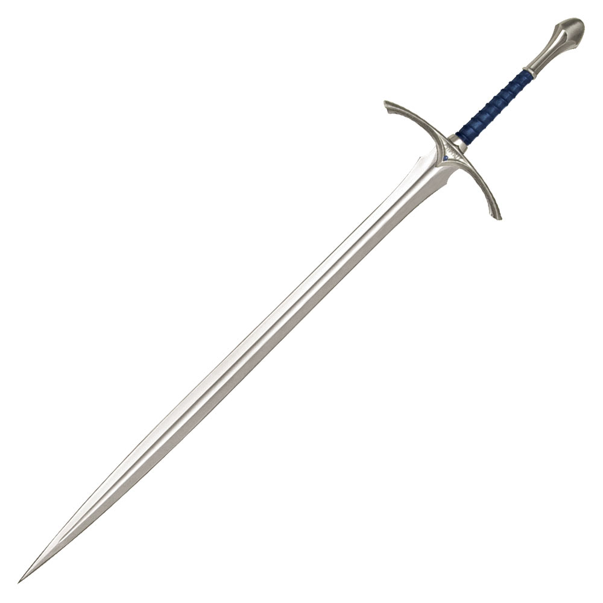It was forged by the elves of King Turgon of Gondolin, one of the High Kings of the Noldor. It was the twin sword of Orcrist, the weapon of Ecthelion of the Fountain, Captain of the city. The sword disappeared after the fall of Gondolin, at the end of the First Age of the Sun of Arda, being discovered in the Third Age by Gandalf, Bilbo Baggins and the company of dwarves (as told in The Hobbit) in a troll cave, as part of a treasure whose origin could be in the sacking of Gondolin. Elrond says its name could be translated as "Hammer of enemies".
The orcs are mortally terrified of this sword, and remember it because it fought in the hands of Turgon, king of Gondolin, in the wars against the orcs and felled many enemies.
It has a runic inscription on the guard in the Sindarin language (Glamdring - Turgon Aran Gondolin, Tortha gar a matha Glamdring, Vegil Glamdring gud daelo. Dam an Glamhoth), whose translation would be: «Glamdring - Turgon king of Gondolin carries, has and wields the sword Glamdring, enemy of the kingdom of Morgoth, hammer of orcs.
Later, Gandalf uses it as his own sword in the War of the Ring. It has the peculiarity, like many other elven weapons, that its blade shines with a bluish glow when enemies are nearby.
It was wielded mainly as a two handed sword, although Gandalf most of the times uses it with one hand, having his staff in the other. It has participated in the fall of Gondolin, the battle of the five Armies, the battle of Helm's Deep, the Siege of Gondor and the battle of the Morannon. Gandalf chose to leave her in the care of Aragorn, King Elessar, as part of his inheritance, before departing for the Undying Lands of Valinor.
Sting:
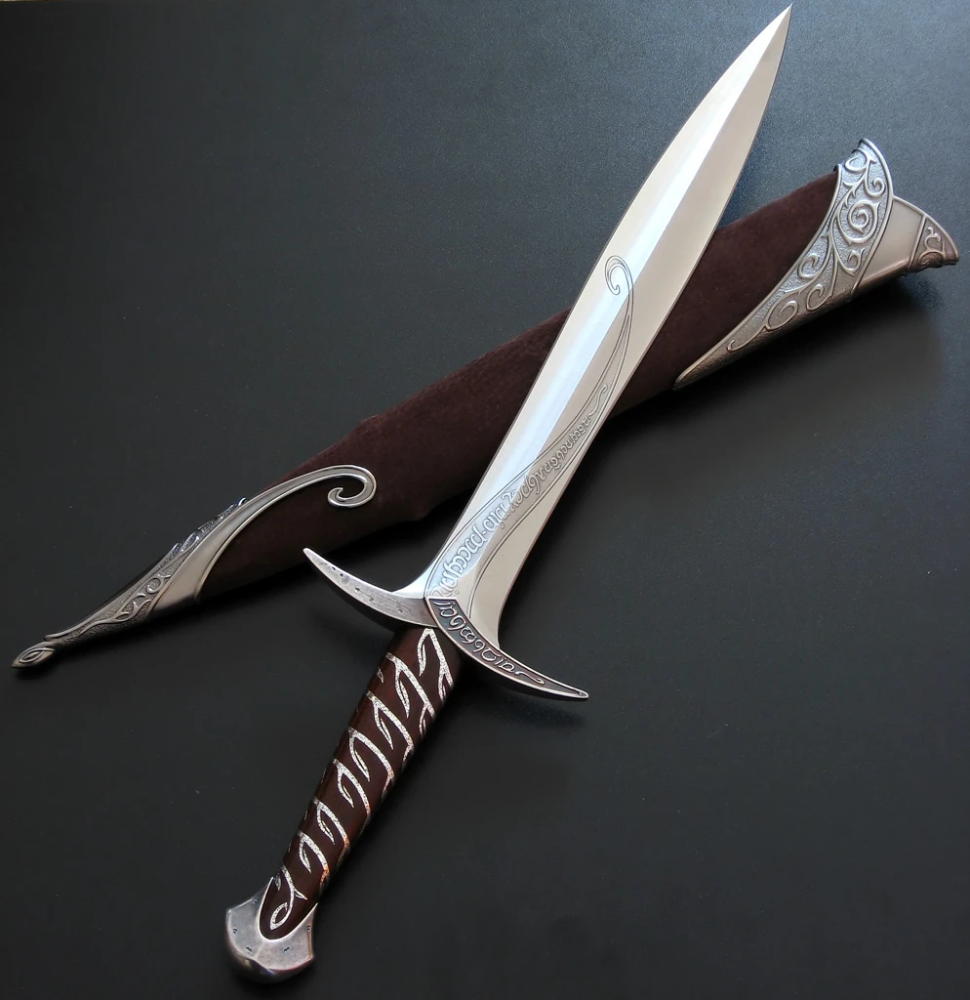Though just a dagger by standard of the Elves, Sting made a perfect short-sword for a Hobbit, although it was still rather small. Bilbo initially chose to wear it "inside his breeches" and was still able to travel and even run without any apparent inconvenience.
Bilbo Baggins discovered this sword in the year TA 2941 in a Troll-hoard, and used it during the Quest of Erebor. He later passed it to his heir Frodo Baggins. "I will give you a name... and I shall call you Sting."
Sting was like Glamdring and Orcrist in that "being the work of Elvish smiths in the Elder Days these swords shone with a cold light, if any Orcs were near at hand."
Gollum, who disliked anything made by the Elves, was afraid of Sting. This fear aided Bilbo when he confronted Gollum in the cave at the base of the Misty Mountains in The Hobbit. This also helped Frodo and Sam subdue Gollum decades later, when they encountered him in the Emyn Muil. Orcs also had an instinctive fear of these weapons and hated any who carried them.
It participated in the battle of the five Armies and was used by Sam against Shelob and the tower orcs in Mordor.
Following Frodo's departure to the Undying Lands it is unknown whether he took Sting with him or left it to Sam, as he did with the Red Book, in which case it would have landed in the possession of the Fairbairns or Gardners.
Orcrist:
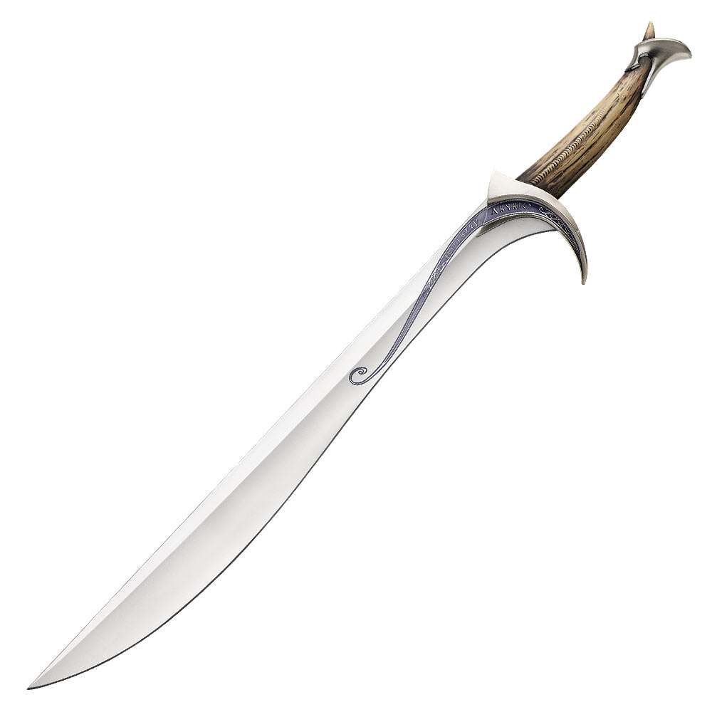Orcrist was forged from a tusk handle by the Noldor during the First Age of the Sun, when the hidden city of Gondolin was in bloom. It was the sword of the Lord of the Fountains, Ecthelion, who ended his days fighting the balrog Gothmog at the gates of the King's Tower in Gondolin, a battle in which both opponents died. Orcrist was forged alongside Glamdring, the sword of Turgon, king of Gondolin. The Noldor not only forged a valuable weapon, but gave it the power to glow a pale blue when the elves' enemies approached, the same property that Glamdring and Dart had, the dagger used by the hobbits Bilbo, Frodo Baggins and Samwise Gamyi as a sword.
Already at the end of the Third Age of the Sun, the trolls Berto, Tom and Guille somehow obtained several objects from the fall of Gondolin, and among them Orcrist, Glamdring and Dardo. After the incident in which the three trolls are turned to stone, Thorin's company takes their treasure, Thorin reserving Orcrist for himself. Orcrist was finally placed on Thorin Oakenshield's chest following her death in the Battle of the Five Armies.
In the Elven language Sindarin, Orcrist means 'goblin cutter'. It is translated as"the cleaver of goblins." The goblins, in turn, knew her as "Biter" and hated her with all her might.
It participated in the fall of Gondolin and in the battle of the five Armies.
The Bow of the Galadhrim:
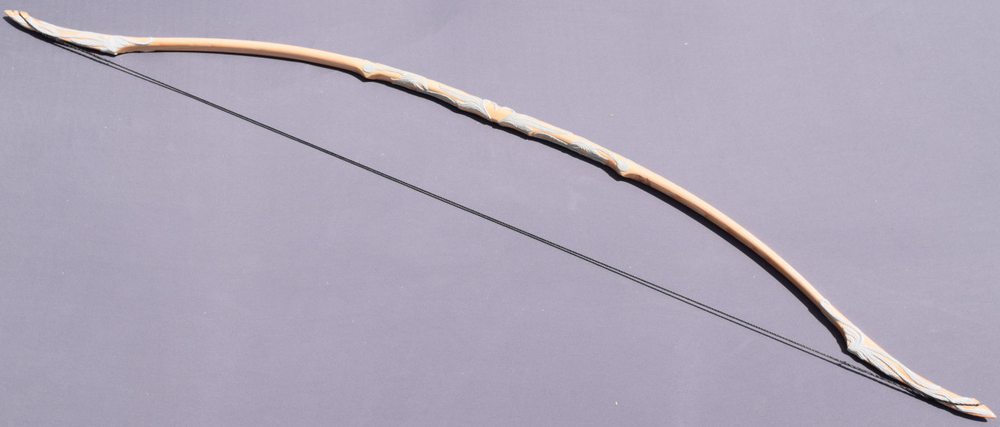Up until Lothlórien, Legolas carried the Bow of Mirkwood. It was a compact, lightweight bow that was accurate and effective -- in the confines of Mirkwood's forest. However, it was too small for open combat.
But Galadriel gifted him a new bow: The Bow of the Galadhrim. It was larger and stouter than his previous weapon. That meant that it was more powerful and could shoot farther. Tolkien didn't expressly say that the weapon was imbued with any kind of magic, but given Elves' tendency to make special weapons, it wouldn't be a stretch to think that the bow had some added magical benefits.
With his new bow, Legolas would go on to bring down many Uruk-hai at the Battle of Helm's Deep and an Oliphant at the Battle of the Pelennor Fields. However, his greatest kill came in the books. The Fellowship was sailing down the Anduin River when a Nazgûl approached them under cover of darkness. Firing an arrow, Legolas brought down the wraith's mount. It must have really been an impressive shot because even Gimli complimented Legolas' skill.
It participated in the battle of Helm's Deep, the Siege of Gondor and the battle of the Morannon. It is unknown if legolas took it with him to the Undying Lands.
Manmade:
Men forged some very powerful weapons, specially Numenoreans.
Anduril:
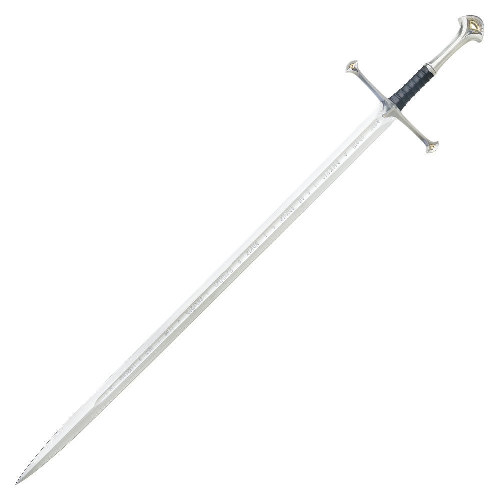Andúril is the sword carried by the future King Aragorn II throughout the War of the Ring since his departure from Rivendell as part of the Fellowship of the Ring.
The sword was forged in TA 3019 from the remains of Narsil, the sword of Elendil, with which Isildur cut the finger where Sauron wore the One Ring during the War of the Last Alliance and whose fragments survived the Battle of the Rings. It wascarried to Rivendell by Ohtar, Isildur's own squire, for Prince Valandil, Isildur's youngest son and ward of Elrond Peredhil.
With the formation of the Fellowship, Elrond had it forged for Aragorn, responding to the latter's intention to claim and unify the Kingdoms of Gondor and Arnor. With it, Aragorn fought in all the battles in which he participated and used it on more than one occasion to prove his identity.
The blade bore an inscription in Quenya, added by the blacksmiths of Rivendell, which read 'Anar. Nányë Andúril i né Narsil i macil Elendilo. Lercuvanten i móli Mordórëo. Isil", which in the Common Language reads 'Sol. I am Andúril, who was Narsil, the sword of Elendil. May the minions of Mordor flee from me. Moon'.
Following the War of the Ring, the sword would become an heirloom of the Unified Kingdom and would be wielded by Eldarion and his descendants throughout the Fourth Age.
It is also called "The flame of the west" or "the reforged sword".
Boromir's sword:

Boromir’s sword was single-handed, big, broad and powerful – a fit complimentary to its owner. To use it required someone with great strength, which this skilled warrior abundantly possessed. The blade’s flattened diamond shape and equally wide fuller reduced weight, yet retained strength in the end of the blade by stopping just short of the tip. The guard, similar to that of his father’s sword, showed a warrior’s flourish in that it was formed from a square-edged piece of steel that had been twisted before being curved into a crescent. The handgrip was wide like the blade, and the pommel was an elegant and simple piece of steel that added weight to balance the blade.
It participated in the battle for Osgiliath. When Boromir died, the sword traveled with him along the Anduin river and was buried with him.
Herugrim:
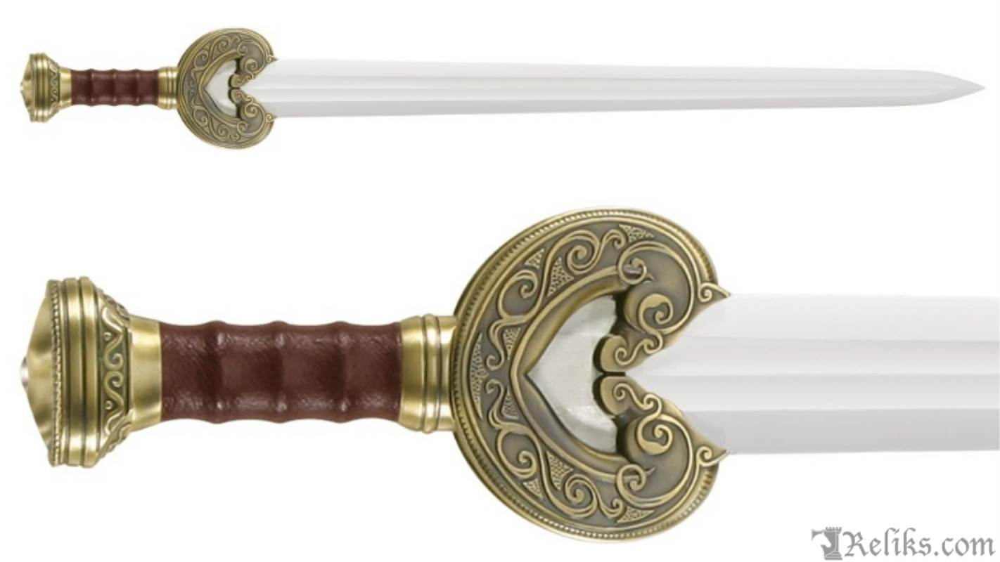Herugrim ("fierce sword" in Anglo-Saxon) was, the sword of Théoden, king of Rohan, described in his book The Two Towers. It is a long sword, in a sheath with a gold clasp and studded with green gems. It has two finely carved horse heads in opposition, which form the cross of the weapon, motifs of the Rohan culture.
The weapon was used by the king in the battles of Helm's Deep and Pelennor Fields, in which he died.
Eowyn's sword:
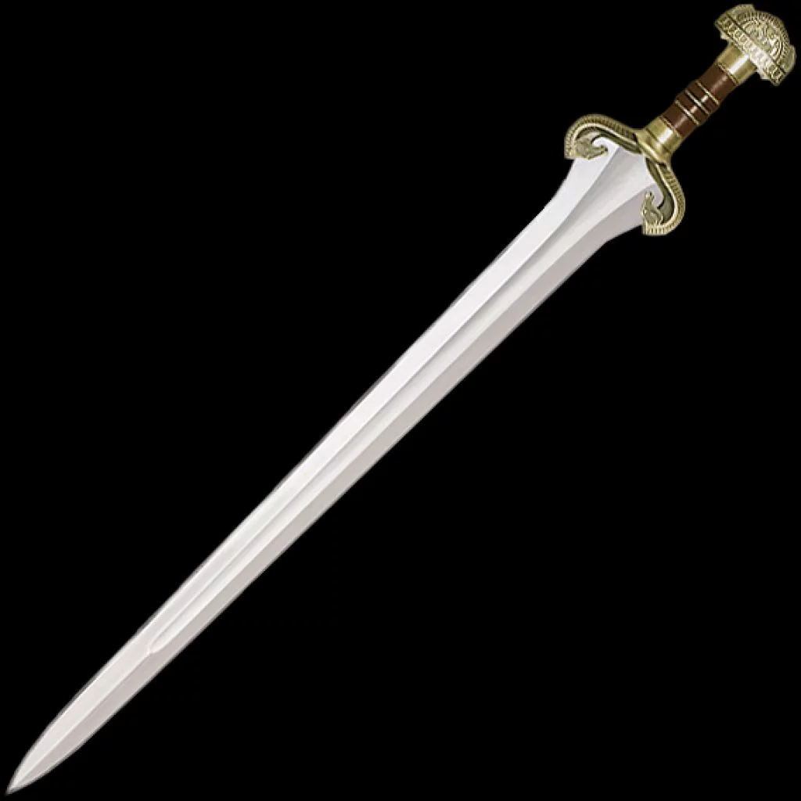Eowyn's sword has no proper name. Éowyn’s sword is short, with a broad blade and single wide fuller, befitting someone of smaller stature. Yet it also suggests the Lady of Rohan was surprisingly strong for her size.
The blade is made from tempered spring steel, ground into a point that was destined to fell the darkness before her. The crossguard and pommel are made from solid bronze with a reddish hue that mellows towards gold as it ages. The wooden grip is covered with leather and decorated intricately with three bronze rings. The beautiful guard and pommel are designed in honor of the mearas.
It slain many orcs in Helm's Deep defending the women and the children in the glittering caves. It also participated in the Battle of the Pelennor fields where it achieved its greatest feat: It was used to kill thw Witch-King of Angmar fullfiling the prophecy that he would be killed by no man.
The Witch-King's sword:
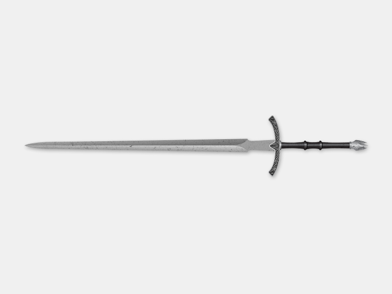The sword has no name. It, as his owner, was Numenorean. It was fit for a king. It is a long White Blade which the Witch King uses as his main weapon. He appears to have some fell magic for it, as it bursts into flame for him when he faced Gandalf the White.
He uses it briefly to duel Aragorn on Weathertop. He also uses it to command his armies in the Siege of Gondor and to break Gandalf's Staff in Minas Tirith.
Dwarfmade:
Throughout their existence, the so-called Naugrim, or Dwarves, were experts at making and using various weaponry, with no equal. This skill came from the Vala Aulë the Smith, who crafted the Dwarves at the beginning of Arda. The list of common Dwarven weaponry was extensive, and from their very origin each type, including bows, swords, axes, and mattocks, have retained a unique Dwarven identity and respect among other cultures.
Axe of Durin:
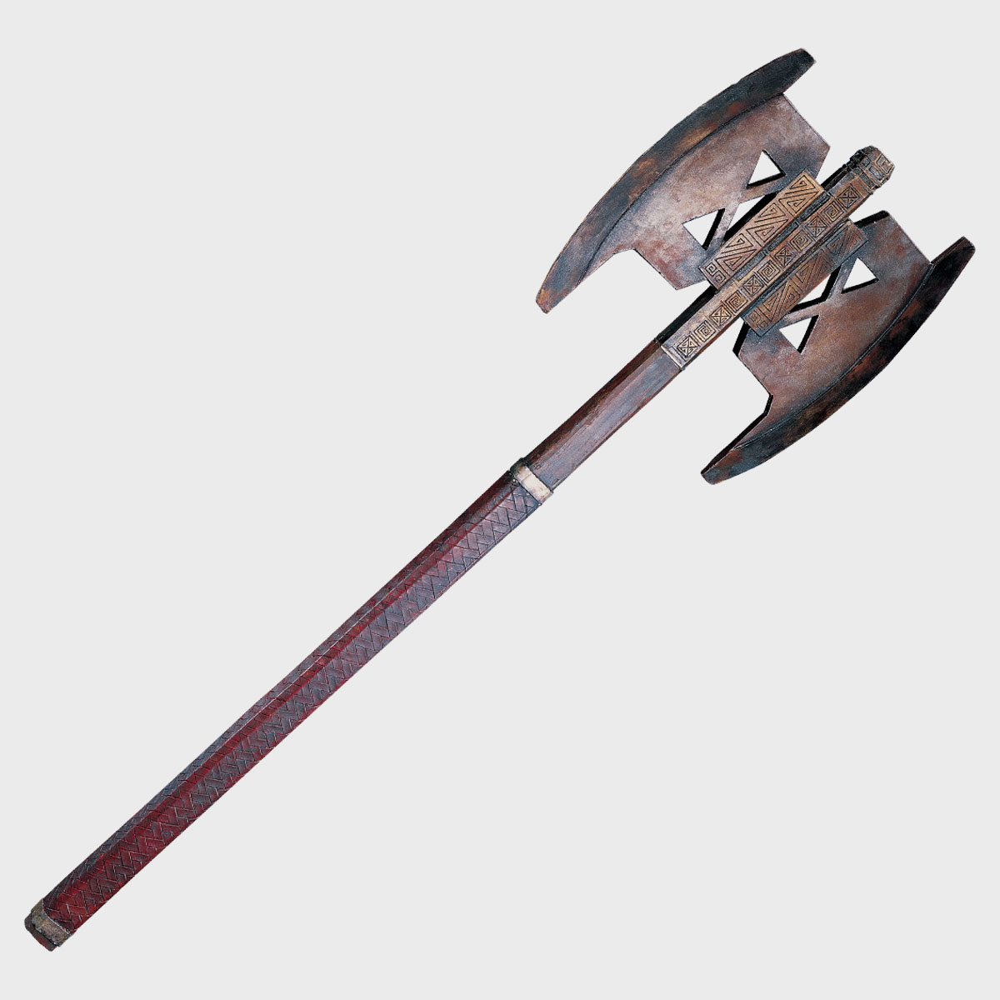Like most Dwarves, Gimli favored the axe and carried an assortment of variations of the weapon throughout his travels. At the beginning of his journey, Gimil was already equipped with a long-handled axe which doubled as a walking stick, to ease the strain of long walks through the vast grasslands of Middle-earth, a value to the heavily clad Dwarf.
During the Fellowship's travels through Moria, Gimli was able to retrieve a double bladed battle axe which apparently belonged to his father's cousin Balin, Lord of Moria, who had perished during the Goblin and Orc attack on Dwarrowdelf. Being double bladed, it allowed Gimli to swing it in both directions, without any need to constantly change the angle or grip. But it was much heavier, with a shorter handle, which meant it was more suited to close combat but was compensated by its great striking power.
It participated in the Battle of Helm's Deep, the battle of the Pelennor fields and the battle of the Morannon.
Other:
There are other weapons that have another origin but that are really powerful none the less.
Gandalf's Staff:
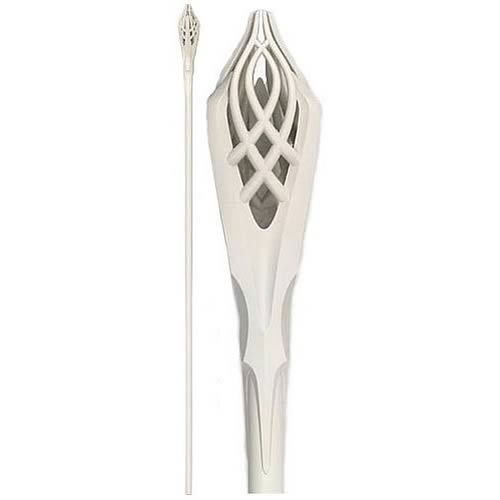Gandalf has different staffs during his stay in Middle-Earth. First he has one called "Opening Flower" made by the elfs which he carries in the hobbit. But this staff is withered away into dust when Gandalf engages the growing presence of Sauron. As a replacement, Radagast gives him his spare staff which he carries until The fellowship of the Ring. Later, when he faces Saruman, he looses his staff and scapes Orthanc without it. Fortunately, it isn't long before Gandalf is given another replacement when he and the Hobbits are reunited at Rivendell. Elrond's hospitality ensures the newly-formed Fellowship depart well-stocked, and this includes a new staff for the group's resident magician. Then when he comes back as Gandalf the White, he carries a completely different staff which also widens his powers. But that staff is broken by the Witch-King of Angmar in Minas Tirith. By the end of the Return of the King, Gandalf has a new one, or rather a restored one, because it has the same design as the previous.
It allows Gandalf to channel magic stronger and more precisely. Gandalf the White's staff even matches his new aesthetic. He also takes on a mortal form when roaming Middle-earth. As such, that form could affect his Maiar abilities to call on the magic of nature, making the staff more of a necessity.
The different staffs acompanied him through the battle of the five Armies, the battle of Helm's Deep and the Siege of Gondor.
The One Ring:
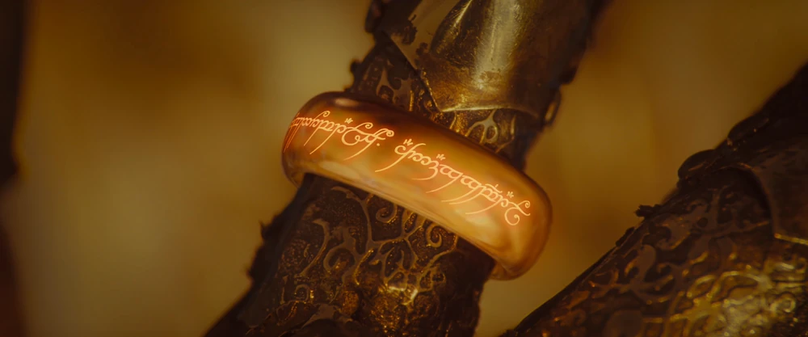The One Ring is maybe the smallest but at the same time the greatest weapon of the Lord of the Rings. It is also called the Ruling Ring and Isildur's Bane.
It first appeared in the earlier story The Hobbit (1937) as a magic ring that grants the wearer invisibility. But then on the Lord of the Rings is revealed to be the One Ring, that was forged by the Dark Lord Sauron during the Second Age to gain dominion over the free peoples of Middle-earth. In disguise as Annatar, or "Lord of Gifts", he aided the Elven smiths of Eregion and their leader Celebrimbor in the making of the Rings of Power. He then secretly forged the One Ring in the fires of Mount Doom. Sauron intended it to be the most powerful of all Rings, able to rule and control those who wore the others. Since the other Rings were powerful on their own, Sauron was obliged to place much of his own power into the One to achieve his purpose.Creating the Ring simultaneously strengthened and weakened Sauron. With the Ring, he could control the power of all the other Rings, and thus he was significantly more powerful after its creation than before; but by binding his power within the Ring, Sauron became dependent on it.
The Ring seemed to be made simply of gold, but it was completely impervious to damage, even to dragon fire (unlike other rings). It could be destroyed only by throwing it into the pit of the volcanic Mount Doom where it had been forged. Its identity could be determined by placing it in a fire, when it displayed a fiery inscription in the Black Speech that Sauron had devised.
"One ring to rule them all,
one ring to find them,
One ring to bring them all
and in the darkness bind them."
Sauron's body was destroyed in the Fall of Númenor, but his spirit travelled back to Middle-earth and wielded the One Ring in renewed war against the Last Alliance of Elves and Men. Gil-galad and Elendil destroyed Sauron's physical form at the end of the Last Alliance, at the cost of their own lives. Elendil's son, Isildur, cut the Ring from Sauron's hand on the slopes of Mount Doom. Though counselled to destroy the Ring, he was swayed by its power and kept it "as weregild for my father, and my brother". A few years later, Isildur was ambushed by Orcs by the River Anduin near the Gladden Fields; he put on the Ring to escape, but it chose to slip from his finger as he swam, and, suddenly visible, he was killed by the Orcs. Since the Ring indirectly caused Isildur's death, it was known in Gondorian lore as "Isildur's Bane".
The Ring remained hidden on the river bed for almost two and a half millennia, until it was discovered on a fishing trip by a Stoor hobbit named Déagol. His friend and relative Sméagol, who had gone fishing with him, was immediately ensnared by the Ring's power and demanded that Déagol give it to him as a "birthday present"; when Déagol refused, Sméagol strangled him and took the Ring. It corrupted his body and mind, turning him into the monstrous Gollum.
500 years later, It chose to leave Gollum, but something inexpected happened: Bilbo found the Ring while lost in the tunnels near Gollum's lair. After losing the Riddle Game to Bilbo, Gollum went to get his "Precious" to help him kill and eat Bilbo, but found the Ring missing. Furious he chased Bilbo through the tunnels unknowingly giding him to the exit because he was using the Ring to become invisible.
The Ring began to strain Bilbo, leaving him feeling "stretched-out and thin", so he decided to leave the Shire, intending to pass the Ring to his adopted heir Frodo Baggins. He briefly gave in to the Ring's power, even calling it "my precious"; alarmed, Gandalf spoke harshly to his old friend to persuade him to give it up, which Bilbo did, becoming the first Ring-bearer to surrender it willingly.
Gollum eventually left the Misty Mountains to track down the Ring. He was drawn to Mordor, where he was captured. Sauron tortured and interrogated him, learning that the Ring had been found and was held by one "Baggins" in the land of "Shire".

To prevent Sauron from reclaiming his Ring, Frodo and eight other companions set out from Rivendell for Mordor to destroy the Ring in the fires of Mount Doom. During the quest, Frodo gradually fell under the Ring's power. When he and his faithful servant Sam Gamgee discovered Gollum on their trail and "tamed" him into guiding them to Mordor, Frodo began to feel a bond with the wretched, treacherous creature, while Gollum warmed to Frodo's kindness and made an effort to keep his promise. Gollum however gave in to the Ring's temptation, and betrayed Frodo to the spider Shelob. Believing Frodo to be dead, Sam bore the Ring himself for a short time and experienced the temptation it induced.
Sam rescued Frodo from Orcs at the Tower of Cirith Ungol.[T 15] The hobbits, followed by Gollum, reached Mount Doom, where Frodo was overcome by the Ring's power and claimed it for himself. At that moment, Gollum bit off his finger, taking back the Ring, but, gloating, he and the Ring fell into the fires of Mount Doom. The Ring and Sauron's power were destroyed.
Ring's Powers:
The Ring's primary power was control of the other Rings of Power and domination of the wills of their users. The Ring also conferred power to dominate the wills of other beings whether they were wearing Rings or not—but only in proportion to the user's native capacity. In the same way, it amplified any inherent power its owner possessed.
A mortal wearing the Ring became effectively invisible except to those able to perceive the non-physical world, with only a thin, shaky shadow discernible in the brightest sunlight. Sam was able to understand the Black Speech of Orcs in Mordor during his brief possession of the One Ring.
The Ring extended the life of a mortal possessor indefinitely, preventing natural aging. Gandalf explained that it did not grant new life, but that the possessor merely continued until life became unbearably wearisome. The Ring did not protect its bearer from destruction; Gollum perished in the Crack of Doom, and Sauron's body was destroyed in the downfall of Númenor. Like the Nine Rings, the One Ring physically corrupted mortals who wore it, eventually transforming them into wraiths. Hobbits were more resistant to this than Men: Gollum, who possessed the ring for 500 years, did not become wraith-like because he rarely wore the Ring. Except for Tom Bombadil, nobody seemed to be immune to the corrupting effects of the One Ring, even powerful beings like Gandalf and Galadriel, who refused to wield it out of the knowledge that they would become like Sauron himself.
Within the land of Mordor where it was forged, the Ring's power increased so significantly that even without wearing it the bearer could draw upon it, and could acquire an aura of terrible power. When Sam encountered an Orc in the Tower of Cirith Ungol while holding the Ring, he appeared to the terrified Orc as a powerful warrior cloaked in shadow "holding some nameless menace of power and doom".
As the Ring contained much of Sauron's power, it was endowed with a malevolent agency. While separated from Sauron, the Ring strove to return to him by manipulating its bearer to claim ownership of it, or by abandoning its bearer.